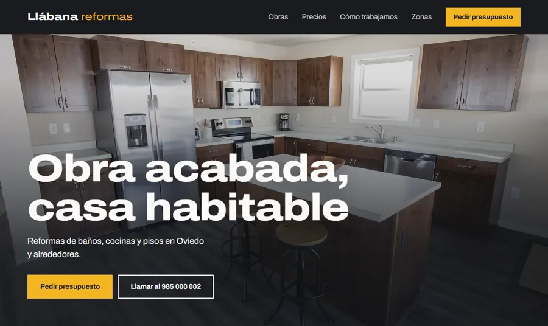

Webs para negocios de Asturias
Tres ejemplos con negocios inventados, para que veas cómo podría quedar la tuya.
-

Clínica de fisioterapia
Cálida y cercana: elige dónde te duele y pide cita por WhatsApp.
-

Consulta de podología
Limpia y serena: reserva online y preguntas frecuentes.
-

Empresa de reformas
Sólida y visual: antes y después, zonas y petición de presupuesto.
Quién las hace
Soy Darío, estudio Ingeniería Informática del Software en la Universidad de Oviedo y hago webs para negocios de la zona.
Cada una se hace a medida: tus fotos, tus textos y la forma en que tú das cita o presupuestos. Se ven bien en el móvil y cargan rápido.